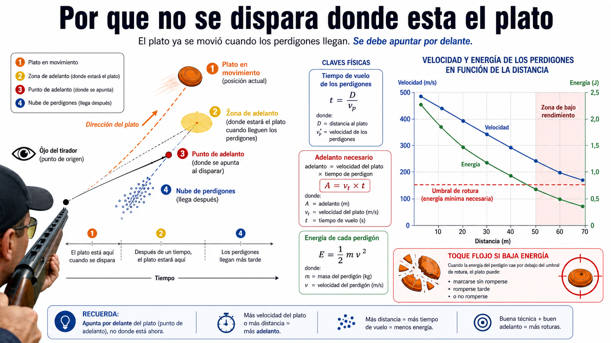

Capitulo 8 de 16
La geometría del adelantamiento explicada para tiradores
Explica el adelantamiento sin jerga matemática: plato, tiempo, perdigones y punto futuro de encuentro.

Como leer este capitulo
Tirador: busca las ideas practicas y las senales que puedes observar en cancha.
Simulador: relaciona cada concepto con controles, ayudas visuales y ejercicios repetibles.
Tecnica: usa las formulas y limites como apoyo, no como sustituto de profesor o normativa.
8.1. La regla principal
- No se dispara a la posición actual.
- Se dispara al punto de encuentro.
- Plato y perdigones deben coincidir en tiempo y espacio.
- El adelantamiento depende del escenario.
8.2. Qué es el punto de encuentro
- Posición actual del plato.
- Dirección.
- Tiempo hasta el impacto.
- Lugar futuro.
- Línea del disparo.
- Intersección visual.
8.3. Variables que cambian el adelantamiento
- Velocidad del plato.
- Dirección.
- Ángulo respecto al tirador.
- Distancia.
- Altura.
- Velocidad del cartucho.
- Tiempo de reacción.
- Movimiento del arma.
8.4. Plato frontal
- Poco desplazamiento lateral aparente.
- Menor adelantamiento lateral.
- Importancia de la altura.
- Riesgo de taparlo.
- Cambios rápidos de tamaño aparente.
8.5. Plato cruzado
- Movimiento lateral.
- Adelantamiento visible.
- Diferencia entre cruce cercano y lejano.
- Continuidad del swing.
- Punto de disparo.
8.6. Plato diagonal
- Componentes lateral y vertical.
- Corrección combinada.
- Percepción de la pendiente.
- Tendency to aim behind and low.
- Uso de referencias visuales.
8.7. Plato ascendente
- Movimiento vertical.
- Sensación de que se frena.
- Efecto de la gravedad.
- Altura de la culata.
- Punto de impacto de la escopeta.
- Necesidad de mantener visible el plato.
8.8. Cinco trayectorias comparadas
Una lámina principal mostrará:
1. Plato rápido hacia la izquierda.
2. Plato diagonal hacia la izquierda a media altura.
3. Plato central muy vertical.
4. Plato cruzado hacia la derecha.
5. Plato muy lateral hacia la derecha.
Para cada uno se mostrará:
- Posición actual.
- Trayectoria.
- Punto de encuentro.
- Adelantamiento visual.
- Altura.
- Distancia.
- Error típico.
8.9. Métodos visuales de adelantamiento
- Movimiento continuo.
- Pasar el plato y disparar.
- Mantener una separación.
- Interceptar desde delante.
- Ventajas y dificultades de cada método.
- Necesidad de seguir el método del profesor antes de mezclar técnicas.
8.10. Punto de espera
- Dónde colocar inicialmente el cañón.
- No esperar directamente sobre la máquina.
- Tiempo disponible para leer el plato.
- Diferencia según puesto y modalidad.
- Relación con el movimiento corporal.
8.11. Zona de mirada
- Mirar al fondo.
- Evitar fijarse en la máquina.
- Detectar el plato con visión periférica.
- Llevar la atención al objetivo.
- Mantener ambos ojos abiertos cuando sea adecuado.
- Dominancia ocular.
8.12. Relación entre culata y geometría
- Altura del ojo.
- Cantidad de banda visible.
- Punto de impacto.
- Escopeta que dispara más alto o más plano.
- Ajuste del lomo.
- Por qué un ajuste mecánico no sustituye la técnica.
8.13. Primer y segundo disparo
- Distancia adicional.
- Plato más lento o descendente.
- Nube de perdigones distinta.
- Cambio de choke.
- Pérdida visual.
- Corrección sin levantar la cabeza.
Infografías previstas
- «El punto de encuentro»
- «Cinco platos, cinco adelantamientos»
- «Punto de espera, aparición y seguimiento»